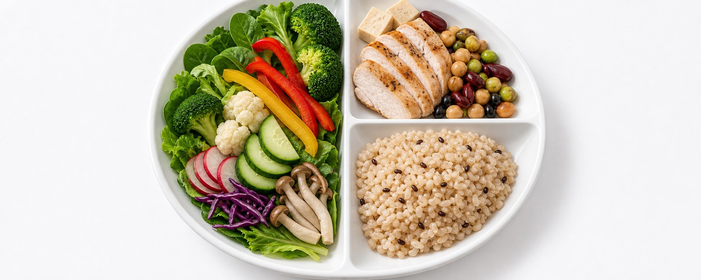
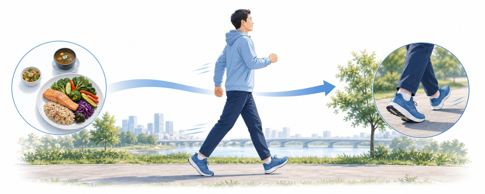
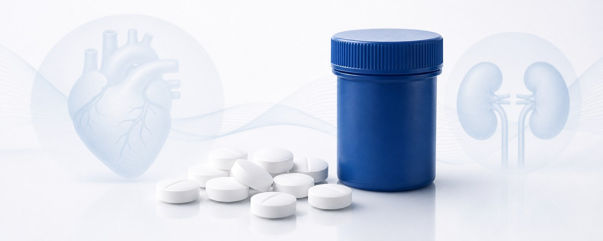

검사 · 01
혈당 · 당화혈색소(HbA1c)
공복혈당 + 최근 2~3개월 평균인 HbA1c로 현재 조절 수준과 첫 목표치를 정합니다.

검사 · 02
혈압 · 지질(콜레스테롤)
당뇨는 혈관병입니다. 혈압·나쁜 콜레스테롤(LDL)을 함께 관리해야 심근경색·뇌졸중을 막습니다.
검사 · 03
신장 — 소변알부민 · eGFR
콩팥 합병증은 초기에 증상이 없습니다. 소변검사(uACR, 소변 속 단백)와 혈액검사(eGFR, 콩팥 거르는 기능)로 가장 먼저 신호를 잡습니다.
검사 · 04
눈(안저) · 발 검진
진단 시 안저검사 1회 + 발 감각·맥박 확인. 망막·신경 합병증 조기 발견용입니다.

PILLAR · 01
식사 — 접시법

½ 채소, ¼ 단백질, ¼ 통곡물. 굶지 않고 균형을 맞추는 것이 핵심입니다.
PILLAR · 02
운동 — 주 150분

빠르게 걷기 등 중강도 유산소 + 주 2회 근력. 식후 10분 걷기부터 시작합니다.
PILLAR · 03
약물 — 부담 없이 시작

대부분 메트포민으로 시작합니다. 동반질환이 있으면 장기 보호 약도 함께 정합니다.

PILLAR · 04
자가측정 — 내 패턴 알기
음식·운동·약의 효과를 기록으로 확인합니다. 다음 진료 때 흐름을 함께 봅니다.

메트포민(Metformin)은 간에서 당이 과하게 만들어지는 것을 줄이고 인슐린 감수성을 높이는 모든 환자의 1차 약물입니다.
500mg 1회로 시작해 1~2주마다 천천히 늘립니다. 속이 불편할 수 있어 식사와 함께 복용하고 서서히 증량하면 대부분 적응합니다. 임의로 끊지 말고, 속쓰림·설사가 심하면 줄이거나 천천히 녹는 형태(서방형)로 바꿀 수 있으니 알려주세요. 콩팥 기능이 많이 떨어졌거나(eGFR 30 미만) 조영제 검사 전후에는 잠시 중단합니다.
HbA1c 감소
1.0 ~ 1.5 %
체중 중립 · 저혈당 거의 없음.
동반질환 시
심장·콩팥 보호약
심장·콩팥을 함께 보호하는 비교적 새로운 당뇨약(SGLT2 억제제·GLP-1 계열)을 처음부터 같이 쓰기도 합니다.
+
늘리기 — 혈당을 안정시키는 선택
- 접시법 — ½ 채소, ¼ 단백질, ¼ 통곡물
- 채소 먼저 먹기 — 식후 혈당 상승 완화
- 식이섬유 25g/일 — 채소·통곡물·콩
- 물·무가당 음료로 갈증 해결
- 일정한 식사 시간 — 거르지 않기
- 식후 10분 걷기 — 가장 쉬운 혈당 관리
—
 줄이기 — 혈당을 급등시키는 선택
줄이기 — 혈당을 급등시키는 선택
줄이기 — 혈당을 급등시키는 선택
- 정제 탄수화물 — 흰밥·흰빵·국수 과다
- 가당 음료·주스 — 콜라·믹스커피
- 야식·폭식 — 식후 혈당 급등
- 국물·젓갈 과다 — 혈압까지 악화
- 과음 — 저혈당·간 부담
- 과일주스·말린 과일 — 농축된 당 주의
TARGET · 01
당화혈색소 HbA1c — 대부분 6.5% 이하
나이가 많거나 저혈당 위험이 크면 7~8%로 함께 조정합니다. 내 목표치는 진료 때 정합니다.
TARGET · 02
공복혈당 80 ~ 130 · 식후 < 180
매 끼니가 아니라 평균과 패턴이 중요합니다. 자가측정으로 흐름을 봅니다.

TARGET · 03
혈압 < 130/80 mmHg
당뇨 환자는 대부분 130/80 미만이 목표입니다(위험인자 없으면 다소 완화). 가정혈압을 같은 시간에 재 보세요.
TARGET · 04
LDL 콜레스테롤 < 100 (고위험 < 70)
혈관 보호를 위해 스타틴을 함께 쓰는 경우가 많습니다. 목표는 위험도에 따라 정합니다.
STEP · 01 · 오늘
첫 평가 · 약 시작
기본 검사로 출발점 확인 + 메트포민 시작 + 자가측정 방법 안내. 궁금증은 무엇이든 물어보세요.
STEP · 02 · 1~2주 후
약 적응 · 증량 점검
속이 불편하지 않은지 확인하고 필요하면 용량을 올립니다. 자가측정 기록을 함께 봅니다.
STEP · 03 · 약 3개월 후
HbA1c 재검 · 목표 확인
첫 목표 달성 여부를 확인하고 약·생활을 조정합니다. 안정되면 6개월 간격으로 늘립니다.
STEP · 04 · 이후 정기
합병증 정기 검진
연 1회 안저·신장(소변·혈액)·발 검진으로 합병증을 조기에 잡습니다. 예방접종도 함께 챙깁니다.
URGENT · 01
저혈당 (혈당 < 70)
식은땀·떨림·어지러움이 오면 바로 당분 섭취 — 주스 반 컵·사탕 3~4개·설탕 1큰술(약 15g). 15분 뒤 다시 측정. 의식이 흐리면 먹이지 말고 119.

URGENT · 02
심한 고혈당 · 의식 변화
구토·복통·가쁜 숨·의식 변화가 있으면 혈당과 관계없이 즉시 응급실. 증상 없이 혈당만 높게(300 이상) 지속돼도 빨리 연락하세요.
WATCH · 03
갑작스러운 시력 변화
물체가 일그러지거나 검은 점·시야 가림 — 눈 속 출혈이 의심되니 빠른 안과 평가가 필요합니다.
WATCH · 04
발 상처가 안 나음
상처가 2주 이상 지속되거나 붓고 열나고 냄새 — 당뇨발 진행, 빨리 보여 주세요.
WATCH · 05
가슴 답답함 · 호흡곤란
활동 시 가슴 압박감·식은땀 — 당뇨는 무증상 심근경색이 흔해 늦지 않게 평가합니다.
WATCH · 06
부종 · 거품뇨 · 소변량 감소
다리 부종·거품뇨 — 콩팥 합병증 신호. uACR·eGFR를 다시 확인합니다.